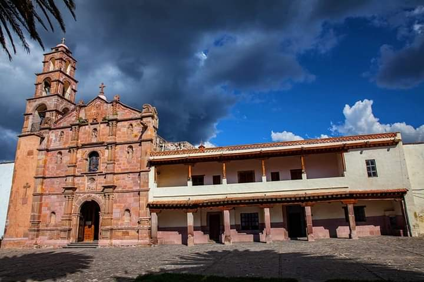

"Bienvenido"
Aculco que en Náhuatl significa "Donde el agua tuerce"
Atractivos

Atractivo Clutural >>>
Suele definirse como un sistema cultural de determinados comportamientos y prácticas, cosmovisiones, éticas, morales, textos, lugares sagrados, profecías u organizaciones.
Gastronomía >>>
Se compone de un conjunto de conocimientos y prácticas relacionadas con el arte culinario, las recetas, los ingredientes, las técnicas y los métodos, así como su evolución histórica y sus significaciones culturales.

Bosques, Cascadas, Rios, Montaña, Flora y Fauna
En todas las cosas de la naturaleza hay algo de lo maravilloso. (Aristóteles)
Festividades >>>
Una festividad es una celebración pública o privada colectiva donde se recuerda un hecho importante y digno de evocar con algarabía o agradecimiento
Atractivo Turistico >>>
Rutas Historicas, Aculco y sus alrrededores, Epoca de cristeros, Independencia de Mexico, Revolucion Mexicana entre otros.
- El sello es gratuito

Que es Safe travels?
El certificado Safe Travels nace como resultado de un conjunto de protocolos promulgados por la Organización Mundial de la Salud (OMS), con el firme propósito de lograr que los destinos turísticos obtengan el reconocimiento de ser seguros y de calidad. Al mismo tiempo, surge para exaltar y alentar a quienes prestan servicios turísticos y que han sido constantes en la implementación de estándares y protocolos sanitarios, a que continúen garantizando la seguridad de los viajeros.
Mas informaciónUbicacion:
Servicios Turisticos
La adelita
Rutas turisticas | Apoyo al DIF Municipal
¿Alguna pregunta? Háganos una pregunta en 44220743091